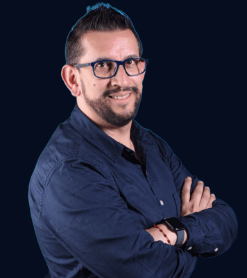

IA aplicada · Emprendimiento sostenible · LATAM
CEO ICONE ialabs · Mentor de Emprendimiento · Speaker Internacional · Docente universitario activo
Ayudo a líderes y empresas en LATAM que sienten que la IA los está dejando atrás a convertirla en su ventaja competitiva real, con el ICONE Method.

Acompaño a líderes, emprendedores y empresas en LATAM a entender, adoptar y monetizar la Inteligencia Artificial. Lo hago desde una posición que pocos tienen: 25+ años de experiencia comercial en multinacionales como Nestlé y Nutresa, combinados con 15+ años construyendo modelos de negocio, programas de mentoría y consultorías que hoy operan en Colombia y la región.
Desde finales de 2022, cuando la IA generativa se democratizó, dejé de ver herramientas sueltas y empecé a ver un ecosistema que se orquesta. Hoy no hablo de "usar ChatGPT" o "probar Claude" — hablo de orquestar múltiples IAs (generativas, predictivas, de búsqueda, visuales, de productividad) trabajando juntas dentro de un mismo flujo de negocio. Esa es la columna del ICONE Method: una hoja de ruta para que cualquier organización pase de "queremos hacer algo con IA" a "ya tenemos un stack de IAs orquestadas generando resultados medibles". Hoy lo respaldan MinCiT, INNpulsa, Universidad EAN, Politécnico Grancolombiano, Universidad Javeriana, Mompreneurs Colombia, Confandi y GoFest, entre muchas otras instituciones.
Soy Mentor de Emprendimiento certificado por el Politécnico Grancolombiano y jurado de emprendimiento del MinCiT. Mi día a día se mueve entre dos audiencias que necesitan exactamente lo mismo: corporativos y emprendedores universitarios aprendiendo cómo usar la IA para crecer. Lo que enseño en aulas es lo que aplico con empresas; lo que aplico con empresas es lo que llevo a infoproductos, mentorías grupales y consultoría 1:1. No hay separación entre lo que enseño y lo que ejecuto.
El sitio principal de la marca: servicios, infoproductos, diagnóstico empresarial y ICONE Method completo.
Conversación públicaReflexiones diarias sobre IA, emprendimiento, mentoría y aplicación del método. Recomendaciones públicas.
GaleríaLo que construyen mis estudiantes y mentorados con IA en 7 verticales tech. Prueba pedagógica real.
No soy un consultor que apareció con el boom de ChatGPT. Adopté la IA como extensión natural de décadas de trabajo en ventas, marketing, liderazgo comercial y mentoría de emprendimiento.
Múltiples roles en paralelo — empresa, mentoría, academia y conferencias. El emprendimiento sostenible es el hilo que los conecta.
Dirección de la empresa de IA aplicada a transformación digital y comercial en LATAM.
Acreditación institucional como mentor en programas de emprendimiento universitario.
Evaluación de iniciativas de emprendimiento en programas del Ministerio de Comercio, Industria y Turismo.
Acompañamiento a emprendedoras y emprendedores en distintos programas y ecosistemas de innovación.
Conferencias y keynotes en eventos corporativos, académicos y de ecosistemas de innovación.
Profesor en ejercicio en tres instituciones simultáneamente. Pregrado, postgrado, diplomado y formación in-company.
Acompañamiento 1:1 a empresas en crecimiento aplicando ICONE Method al cliente — del diagnóstico al resultado medible.
Guías, plantillas y recursos digitales aplicables al emprendimiento, marca personal y aplicación de IA.
Cada dominio es una pieza que aplico con clientes, enseño en aulas y convierto en infoproductos y mentorías. Aquí está el catálogo completo de lo que pongo sobre la mesa.
Múltiples IAs trabajando juntas dentro del mismo flujo: generativas, predictivas, búsqueda, visuales y productividad. No "usar una IA" — orquestar el ecosistema completo.
Acompañamiento a emprendedores en fases tempranas y crecimiento. Modelos de negocio con propósito y proyección de impacto.
Estrategia comercial diseñada con criterio, datos y herramientas de IA. Plantillas y framework propio.
Kit propio para diagnosticar tu negocio en profundidad. Cuellos de botella, oportunidades y prioridades reales en horas.
Método paso a paso para construir marca personal y posicionamiento en LinkedIn con credibilidad real.
Plantilla ejecutable con métricas y semáforo de seguimiento. Para emprendedores y equipos comerciales en arranque.
Cómo presentar tu negocio en 3 minutos. Workshop, plantillas y ejemplos para emprendedores en concursos y rondas.
Versión extendida del Business Model Canvas con foco en canales digitales, IA y monetización.
Marco propio integrador. Innovación sin presupuestos millonarios — método, mentalidad y herramientas correctas.
Programas, mentorías y proyectos en los que el ICONE Method ha generado resultados verificables — con respaldo institucional y casos reales en LATAM.
Acompañamiento a emprendedoras colombianas en construcción y escalamiento de sus negocios. Aplicación del ICONE Method a contextos de emprendimiento femenino, con foco en estrategia comercial, marca personal y herramientas digitales.
Mentor activo en programas universitarios y congresos de emprendimiento e innovación. Acompaño equipos en ideación, validación, modelo de negocio y aplicación temprana de IA al proyecto emprendedor.
Evaluación de iniciativas de emprendimiento en programas del Ministerio de Comercio, Industria y Turismo. Validación institucional de mi criterio metodológico aplicado a políticas públicas de innovación.
Acompañamiento a empresas colombianas en proceso de escalamiento. Diseño y ejecución de módulos de transformación comercial con foco en herramientas digitales aplicables y modelo sostenible.
Programa corporativo de innovación comercial. Cierra el círculo entre mi experiencia previa en la multinacional y el método propio aplicado a sus retos actuales de equipo y mercado.
Mentorías y formación a empresarios afiliados a cámaras de comercio y gremios empresariales. Aplicación del método a microempresas, pequeñas empresas familiares y empresarios en transición digital.
Diseño y dictado del Diplomado completo en alianza con el Politécnico Grancolombiano, incluyendo módulo dedicado a IA aplicada al retail. Profesionales del sector con metodología accionable.
Formación presencial en Inteligencia Artificial aplicada a trabajadores activos del sector BPO en Montería. Adaptación de competencias para no quedar atrás en la curva de adopción de IA.
El ICONE Method es transversal — se ha aplicado en más de 15 sectores. Estos son los verticales donde actualmente se está aplicando con mayor profundidad.
No hablo de IA de oídas, ni de una sola herramienta. Estas son las piezas que combino y orquesto a diario en consultoría, mentorías, aulas y desarrollo de infoproductos.
Conceptos y marcos propios nacidos del cruce entre 25 años de experiencia comercial y la adopción temprana de IA. Aquí está la columna vertebral de mi voz pública.
Marco propio integrador. De "queremos hacer algo con IA" a "ya lo estamos haciendo, con resultados medibles".
Término propio. Prototipar con prompts antes que con código — validar hipótesis de IA en horas, no semanas.
La IA no reemplaza al emprendedor — lo amplifica. El propósito y la sostenibilidad son la única manera de escalar con sentido.
No se trata de "usar una IA". Se trata de orquestar varias trabajando juntas dentro del mismo flujo. Ese es el nivel donde aparecen las ventajas competitivas reales.
No basta con enseñar IA — los estudiantes deben crear con ella. Galería de proyectos reales en 7 verticales tech construidos en mis aulas y mentorías.
FinTech, ClimateTech, AgroTech, DeepTech, IA & Emergentes, EdTech y MarketingTech. Cada proyecto es una hipótesis aplicada de cómo la IA puede generar valor en LATAM, diseñada por estudiantes y emprendedores bajo el ICONE Method.
Instituciones académicas, gubernamentales y corporativas que han validado, contratado o certificado el trabajo del ICONE Method. Pasa el mouse para verlas en color.
Recomendación pública desde LinkedIn — una entre las muchas conversaciones que sostengo con mentees y clientes en LATAM.
Tengo la suerte de contar con Jorge Pérez como mi mentor en mi proceso de construcción de marca personal y desarrollo de productos. La experiencia y conocimientos de Jorge son invaluables. No solo aporta una vasta experiencia en el campo, sino que también demuestra una increíble empatía y una capacidad de escucha activa que realmente marcan la diferencia. Jorge no solo guía, sino que se asegura de entender tus necesidades y objetivos, adaptando su enfoque para ayudarte a alcanzar tus metas de manera efectiva. Gracias a su mentoría, he podido alinear mis procesos de planificación y avanzar con confianza en la creación de mis productos. Recomiendo a Jorge a cualquier persona que busque un mentor dedicado y experimentado.
Programas, mentorías, jurados y espacios académicos donde he sido invitado, contratado o reconocido.
Mentor · Emprendimiento femenino
Ministerio de Comercio, Industria y Turismo
Mentor de Emprendimiento Certificado
Mentor en programas de emprendimiento
Congreso de Emprendimiento e Innovación
Mentor y formador in-company
Docente activo · 4 cursos H1 2026
Formación in-company en Montería
Diplomado de Experiencia al Consumidor
Ecosistema de emprendimiento
Extensión universitaria a contextos rurales
Programa corporativo de innovación
Esta es la hoja de vida — la puerta de entrada. Mi pensamiento, infoproductos, servicios y red profesional viven en dos lugares principales. Sigue por donde te resulte más útil.
El hub completo de ICONE ialabs: dónde aplico el ICONE Method, ofrezco mentoría y consultoría estratégica, y publico los infoproductos que uso con clientes y estudiantes.
LinkedIn es donde mantengo la conversación diaria sobre IA, emprendimiento y transformación digital en LATAM. Allí también encuentras las recomendaciones públicas de quienes han trabajado conmigo.
Mantengo agenda abierta para mentorías, conferencias, consultorías y talleres con líderes, emprendedores y empresas en LATAM que quieren convertir la IA en ventaja competitiva. Este es el foco de mi 2026:
Escríbeme directamente. Resolvemos en una conversación si tu organización, programa o evento encaja con lo que hago — y si es así, coordinamos fechas y formato.